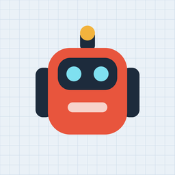

Robo Rota
Coding puzzles for kids · Support
English · Support
What is Robo Rota?
Robo Rota is a coding puzzle game for children aged 8–12. Kids arrange command blocks (forward, turn, jump, repeat) so a little robot reaches its battery. Worlds 1–2 (20 levels) are free; a one-time purchase unlocks worlds 3–20 (180 levels).
Restoring the full version
On the Full Version screen tap Restore purchases and ask an adult to answer the parental question. The purchase is restored on every device signed in to the same Apple Account, and with Family Sharing on all family devices.
Why does the game ask a math question?
Buying and restoring are protected by a parental gate so children cannot make purchases by themselves.
Language and sound
The game follows the device language. You can change it with the 🌐 button on the main menu. The speaker button turns sound effects on or off; nothing plays when the device is muted.
Contact
Questions, ideas or a level that seems impossible? Write to roborota.app@gmail.com. We usually reply within a few days.
Türkçe · Destek
Robo Rota nedir?
Robo Rota, 8–12 yaş çocuklar için bir kodlama bulmacası oyunudur. Çocuk komut bloklarını (ileri, dön, zıpla, tekrarla) dizerek küçük robotu piline ulaştırır. Dünya 1–2 (20 seviye) ücretsizdir. Tek seferlik bir satın alma Dünya 3–20'yi (180 seviye) açar.
Tam sürümü geri yükleme
Tam sürüm ekranında Satın alımları geri yükle'ye dokunun ve ebeveyn sorusunu bir yetişkine yanıtlatın. Satın alma, aynı Apple hesabıyla giriş yapılmış tüm cihazlarda; Aile Paylaşımı açıksa ailedeki tüm cihazlarda geri gelir.
Oyun neden matematik sorusu soruyor?
Satın alma ve geri yükleme, çocukların tek başına alışveriş yapamaması için ebeveyn kontrolüyle korunur.
Dil ve ses
Oyun cihazın dilini kullanır. Ana menüdeki 🌐 düğmesiyle değiştirebilirsiniz. Hoparlör düğmesi ses efektlerini açıp kapatır. Cihaz sessizdeyse ses çalmaz.
İletişim
Soru, öneri ya da çözülemiyor gibi görünen bir seviye mi var? roborota.app@gmail.com adresine yazın. Genellikle birkaç gün içinde yanıt veriyoruz.
Deutsch · Hilfe
Was ist Robo Rota?
Robo Rota ist ein Programmier-Rätselspiel für Kinder von 8 bis 12 Jahren. Kinder ordnen Befehlsblöcke (vorwärts, drehen, springen, wiederholen) so an, dass ein kleiner Roboter seine Batterie erreicht. Welt 1–2 (20 Level) sind kostenlos; ein einmaliger Kauf schaltet Welt 3–20 (180 Level) frei.
Vollversion wiederherstellen
Tippe auf dem Vollversion-Bildschirm auf Käufe wiederherstellen und lass einen Erwachsenen die Elternfrage beantworten. Der Kauf wird auf allen Geräten mit derselben Apple-Account wiederhergestellt, mit Familienfreigabe auf allen Geräten der Familie.
Warum fragt das Spiel nach einer Rechenaufgabe?
Kaufen und Wiederherstellen sind durch eine Elternkontrolle geschützt, damit Kinder nicht allein einkaufen können.
Sprache und Ton
Das Spiel nutzt die Gerätesprache. Mit der 🌐-Taste im Hauptmenü kannst du sie ändern. Die Lautsprecher-Taste schaltet die Soundeffekte an oder aus; bei stummgeschaltetem Gerät ist nichts zu hören.
Kontakt
Fragen, Ideen oder ein Level, das unlösbar scheint? Schreib an roborota.app@gmail.com. Wir antworten meist innerhalb weniger Tage.
Español · Ayuda
¿Qué es Robo Rota?
Robo Rota es un juego de rompecabezas de programación para niños de 8 a 12 años. Los niños ordenan bloques de órdenes (avanzar, girar, saltar, repetir) para que un pequeño robot llegue a su batería. Los mundos 1–2 (20 niveles) son gratis; una compra única desbloquea los mundos 3–20 (180 niveles).
Restaurar la versión completa
En la pantalla de la versión completa toca Restaurar compras y pide a un adulto que responda la pregunta parental. La compra se restaura en todos los dispositivos con la misma cuenta de Apple y, con En familia, en todos los dispositivos de la familia.
¿Por qué el juego hace una pregunta de matemáticas?
Comprar y restaurar están protegidos por un control parental para que los niños no puedan comprar solos.
Idioma y sonido
El juego usa el idioma del dispositivo. Puedes cambiarlo con el botón 🌐 del menú principal. El botón del altavoz activa o desactiva los efectos de sonido; si el dispositivo está en silencio, no suena nada.
Contacto
¿Preguntas, ideas o un nivel que parece imposible? Escribe a roborota.app@gmail.com. Solemos responder en unos días.
Nederlands · Hulp
Wat is Robo Rota?
Robo Rota is een programmeerpuzzelspel voor kinderen van 8 tot 12 jaar. Kinderen zetten opdrachtblokken (vooruit, draaien, springen, herhalen) in de juiste volgorde zodat een kleine robot zijn batterij bereikt. Werelden 1–2 (20 levels) zijn gratis; één eenmalige aankoop ontgrendelt werelden 3–20 (180 levels).
De volledige versie herstellen
Tik op het scherm van de volledige versie op Aankopen herstellen en laat een volwassene de oudervraag beantwoorden. De aankoop wordt hersteld op alle apparaten met hetzelfde Apple-account, en met Delen met gezin op alle apparaten van het gezin.
Waarom stelt het spel een rekensom?
Kopen en herstellen zitten achter een ouderlijk slot, zodat kinderen niet zelf aankopen kunnen doen.
Taal en geluid
Het spel volgt de taal van het apparaat. Je kunt die wijzigen met de 🌐-knop in het hoofdmenu. De luidsprekerknop zet geluidseffecten aan of uit; als het apparaat op stil staat, is er niets te horen.
Contact
Vragen, ideeën of een level dat onmogelijk lijkt? Schrijf naar roborota.app@gmail.com. We antwoorden meestal binnen een paar dagen.
Français · Assistance
Qu'est-ce que Robo Rota ?
Robo Rota est un jeu de casse-tête de programmation pour les enfants de 8 à 12 ans. Les enfants assemblent des blocs de commande (avancer, tourner, sauter, répéter) pour amener un petit robot jusqu'à sa batterie. Les mondes 1–2 (20 niveaux) sont gratuits ; un achat unique débloque les mondes 3–20 (180 niveaux).
Restaurer la version complète
Sur l'écran de la version complète, touche Restaurer les achats et demande à un adulte de répondre à la question parentale. L'achat est restauré sur tous les appareils connectés au même compte Apple et, avec le Partage familial, sur tous les appareils de la famille.
Pourquoi le jeu pose-t-il une question de calcul ?
Les achats et la restauration sont protégés par un contrôle parental pour que les enfants ne puissent pas acheter seuls.
Langue et son
Le jeu suit la langue de l'appareil. Tu peux la changer avec le bouton 🌐 du menu principal. Le bouton haut-parleur active ou coupe les effets sonores ; si l'appareil est en mode silencieux, rien ne joue.
Contact
Des questions, des idées ou un niveau qui semble impossible ? Écris à roborota.app@gmail.com. Nous répondons généralement en quelques jours.